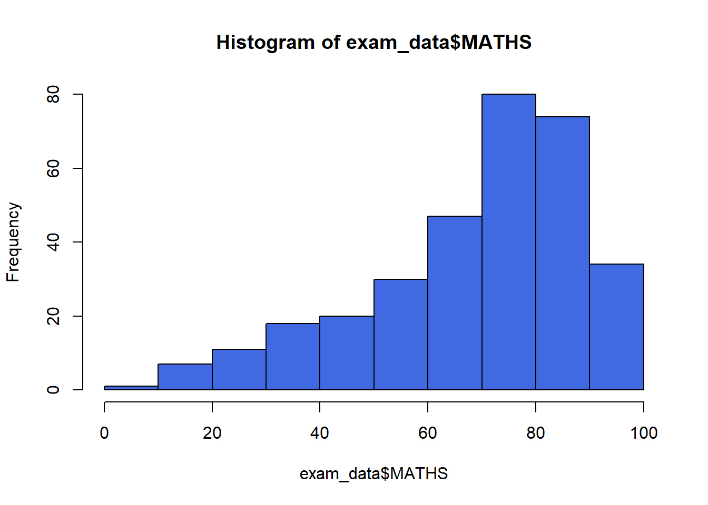
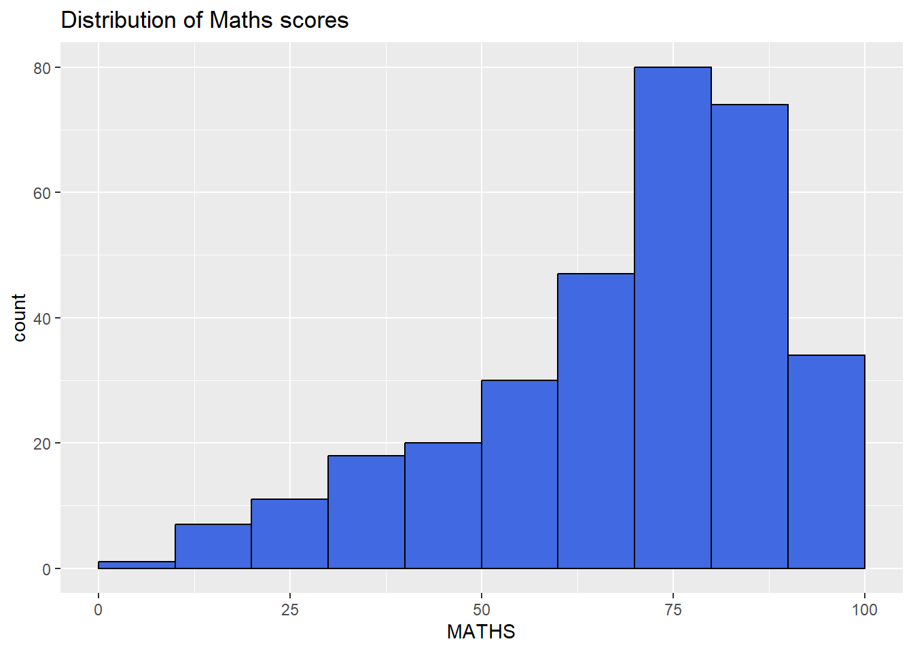

pacman::p_load(tidyverse)Hands-on Exercise 01
1. A Layered Grammar of Graphics: ggplot2 methods
1.1 Learning Outcome
In this chapter, we will learn the basic principles and key components of ggplot2. we will get hands-on experience using these components to create statistical graphics based on the principles of the Layered Grammar of Graphics. By the end, we will be able to apply ggplot2’s essential graphical elements to create elegant and functional statistical visualizations.
1.2 Getting started
1.2.1 Installing and loading the required libraries
The code chunk below uses p_load() from the pacman package to check if the tidyverse packages are installed on my computer. If they are, they will be loaded into the R environment.If not, we will proceed to install pacman first.
1.2.2 Importing data
We will import exam_data.csv into R environment by using the read.csv()function and assign it to exam_data
exam_data <- read_csv("data/Exam_data.csv", show_col_types = FALSE)We will check the dataset using below
- glimpse(): provides a transposed overview of a dataset, showing variables and their types in a concise format.
- head(): displays the first few rows of a dataset (default is 6 rows) to give a quick preview of the data.
- summary(): generates a statistical summary of each variable, including measures like mean, median, and range for numeric data.
glimpse(exam_data)Rows: 322
Columns: 7
$ ID <chr> "Student321", "Student305", "Student289", "Student227", "Stude…
$ CLASS <chr> "3I", "3I", "3H", "3F", "3I", "3I", "3I", "3I", "3I", "3H", "3…
$ GENDER <chr> "Male", "Female", "Male", "Male", "Male", "Female", "Male", "M…
$ RACE <chr> "Malay", "Malay", "Chinese", "Chinese", "Malay", "Malay", "Chi…
$ ENGLISH <dbl> 21, 24, 26, 27, 27, 31, 31, 31, 33, 34, 34, 36, 36, 36, 37, 38…
$ MATHS <dbl> 9, 22, 16, 77, 11, 16, 21, 18, 19, 49, 39, 35, 23, 36, 49, 30,…
$ SCIENCE <dbl> 15, 16, 16, 31, 25, 16, 25, 27, 15, 37, 42, 22, 32, 36, 35, 45…head(exam_data)# A tibble: 6 × 7
ID CLASS GENDER RACE ENGLISH MATHS SCIENCE
<chr> <chr> <chr> <chr> <dbl> <dbl> <dbl>
1 Student321 3I Male Malay 21 9 15
2 Student305 3I Female Malay 24 22 16
3 Student289 3H Male Chinese 26 16 16
4 Student227 3F Male Chinese 27 77 31
5 Student318 3I Male Malay 27 11 25
6 Student306 3I Female Malay 31 16 16summary(exam_data) ID CLASS GENDER RACE
Length:322 Length:322 Length:322 Length:322
Class :character Class :character Class :character Class :character
Mode :character Mode :character Mode :character Mode :character
ENGLISH MATHS SCIENCE
Min. :21.00 Min. : 9.00 Min. :15.00
1st Qu.:59.00 1st Qu.:58.00 1st Qu.:49.25
Median :70.00 Median :74.00 Median :65.00
Mean :67.18 Mean :69.33 Mean :61.16
3rd Qu.:78.00 3rd Qu.:85.00 3rd Qu.:74.75
Max. :96.00 Max. :99.00 Max. :96.00
Reflection
- Learnt how to load libraries, import/ read excel files
1.3 Introducing ggplot
ggplot2 is an R package for creating data-driven graphics based on The Grammar of Graphics. It is also part of the tidyverse family specially designed for visual exploration and communication.
For more information, visit ggplot2
1.3.1 R Graphics VS ggplot
Lets compare how R Graphics, the core graphical functions of Base R and ggplot plot a simple histogram.
hist(exam_data$MATHS,col = "#4169e1")
ggplot(data=exam_data, aes(x = MATHS)) +
geom_histogram(bins=10,
boundary = 100,
color="black",
fill="#4169e1") +
ggtitle("Distribution of Maths scores")
Reflection
- While R Graphics offers simpler syntax, Hadley Wickham emphasizes that the true value of ggplot2 lies not in its specific plotting syntax, but in the transformative way it approaches visualization. It enables users to think of visualizations as a method of mapping variables to the visual attributes of geometric objects, creating a powerful framework for understanding and perceiving data.
1.4 Grammar of Graphics
The Grammar of Graphics, introduced by Leland Wilkinson in 1999, provides a structured approach to creating meaningful data visualizations. It breaks graphs into semantic components like scales and layers, offering a framework to answer the question: What is a statistical graphic?
The key principles I’ve learned are:
Graphics are built from distinct layers of grammatical elements.
Meaningful plots are achieved through aesthetic mapping.
This grammar helps me see how complex graphics are composed, uncover connections between seemingly different visuals, and understand the foundation of diverse visualizations. It also guides me toward recognizing well-formed, meaningful graphics while acknowledging that not all grammatically correct visuals will make sense.
1.4.1 A layered grammar of graphics
Figure shows the seven grammars of ggplot2: A layered grammar of graphics

The building blocks of the Grammar of Graphics are:
- Data: The dataset being visualized.
- Aesthetics: Attributes like position, color, size, shape, or transparency that map data to visual elements.
- Geometries: Visual elements representing data, such as points, bars, or lines.
- Facets: Subsets of data used to create multiple variations of a graph (e.g., panels).
- Statistics: Transformations summarizing data, such as means or confidence intervals.
- Coordinate Systems: The plane where data is plotted (e.g., Cartesian or polar).
- Themes: Non-data components like titles, axis labels, or legend formatting.
1.5 Essential Grammatical Elements in ggplot2: data
Let us call the ggplot( ) function using the code chunk below.
ggplot(data=exam_data)
Note
- A blank canvas is created with
ggplot(). ggplot()initializes a ggplot object.- The data argument specifies the dataset for plotting.
- If the dataset is not already a data.frame, it will be converted to one by fortify().
1.6 Essential Grammatical Elements in ggplot2: aesthetic mappings
Aesthetic mappings link data attributes to visual characteristics like position, color, size, shape, or transparency, allowing each characteristic to represent information. These mappings are defined using the aes() function, and each geom layer can have its own aes() specification.
The code below adds the aesthetic element into the plot.
ggplot(data=exam_data,
aes(x=MATHS,
y=ENGLISH))
Note
- ggplot includes the x/y axis and the axis’s label
1.7 Essential Grammatical Elements in ggplot2: geom
Geometric objects are the visual marks on a plot. A layer combines data, aesthetic mappings, a geometric object (geom), statistical transformations (stat), and position adjustments. Layers are typically created using geom_ functions, with options to override default stat or position settings. Every plot requires at least one geom, and additional geoms can be added using the + operator.
Refer here for a more comprehensive list.
Below are some examples of geom_:
- geom_point: for drawing individual points (e.g., a scatter plot)
- geom_line: for drawing lines (e.g., for a line charts)
- geom_col: for drawing bars with heights mapped to values in the data (e.g., bar charts).
- geom_boxplot: for drawing box-and-whisker plots to visualize data distribution and outliers.
- geom_histogram: for drawing binned values to represent the distribution of a numeric variable (e.g., histograms).
- geom_density: for drawing smoothed density estimates to visualize the distribution of a numeric variable.

1.7.1 Geometric objects: geom_bar
The code below plots a bar chart by using geom_bar().
ggplot(data=exam_data,
aes(x=RACE)) +
geom_bar()
1.7.2 Geometric objects: geom_dotplot
In a dot plot, the dot width represents the bin width (or maximum width, depending on the binning method), and dots are stacked, with each dot signifying one observation.
The code below plots a dot plot chart by using geom_dotplot().
ggplot(data=exam_data,
aes(x = MATHS)) +
geom_dotplot(dotsize = 0.5)
Reflection
- Learnt how to load ggplot package and to create a bar chart using
geom_bar()
library(ggplot2)